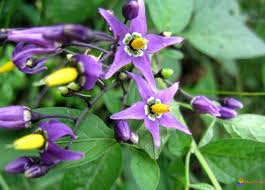

Morelle Douce-Amère ou Morelle grimpante

Morelle Douce-Amère ou Morelle grimpante (Solanum dulcamara de la famille des Solanacées)
Attention : hautement toxique par ingestion pour le Korat !
Partie toxique pour les chats en général et le Korat en particulier :
Toute la plante avec une toxicité moindre des baies.
Symptômes du processus pathologique :
Prostration et vertiges, crises convulsives puis une incoordination motrice évoluant en paralysie des membres postérieurs (position de chats assis) Parallèlement, on observe mydriase, anorexie, diarrhées avec coliques salivation, vomissements, arrêt cardiaque, Stomatite, inflammation des muqueuses buccales.